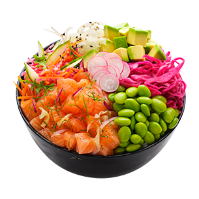

Pokebowl

Quick & Easy Poke Bowl
All the cool kids are going crazy for Poke Bowls. And now you can find out what all the fuss is about, with this quick, easy, make at home Poke Bowl recipe.
What you'll need
- 2 tbs soy sauce or tamari for gluten free
- 1 tsp sesame oil
- 1 tsp Chinese rice wine or apple cider vinegar for gluten free
- ½ lime
- pinch chilli flakes
- 300g salmon fillet (sushi grade)
- 1 packet of microwave rice
- 1 carrot
- 1 Lebanese cucumber
- 10 snow peas
- 2 spring onions
- ½ avocado
- ¼ purple cabbage
- 2 tsp of sesame seeds
Instructions
- ook a packet of microwave rice according to packet directions. Divide the rice between 2 bowls and leave to cool.
- Meanwhile, in a separate bowl combine the soy sauce/tamari, sesame oil, rice wine/apple cider vinegar, lime and chilli flakes then set aside.
- Remove the skin from the salmon fillet and chop it into small cubes. Transfer the chopped salmon to the bowl containing the marinade, give it a stir and leave the salmon to soak while you are cutting your vegetables.
- Chop the carrot and snow peas into thin sticks, slice the avocado and spring onions, grate the cabbage and use a vegetable peeler to cut the cucumber into ribbons.
- Arrange the veggies and salmon on top of the rice, and pour over any extra marinade. Sprinkle with sesame seeds.
This content came from Rani's beautiful recipe over at
https://www.youtotallygotthis.com/quick-easy-poke-bowl-recipe/